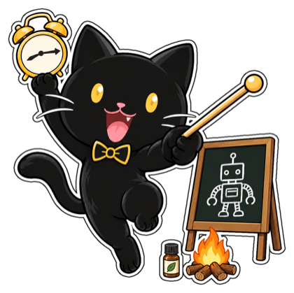

AIブース（リベ大フェス2027の出店チーム）× 神戸 ｜ 公認オフ会の計画（たたき台）neco.さん・くまさんが来る日に、神戸で大AI交流会
11/25 広報MTGで決まったこと
1月末のオフ会は「やる」で決定。公認オフ会は「取れたら取る」（無理には取りに行かない）。立ち上げと周知はおけもん、参加の募集は交流チャットで。告知は11月末に出したい。
ますまるさんに決めてほしい4つ（11/25更新）
緑の札が、おけもんの案です。違うところは、どんどん直してください。
いまココ！ここからの流れ
たたき台を作って、MTGで「やる」と決定11/19〜11/25｜みんな
会場を2つ仮押さえ（1/30・1/31）いま〜11/30｜おけもん
neco.さん・くまさんに日にちを聞くできるだけ早く｜ますまるさん
会の名前を決める〜11/27｜おけもん・ますまるさん
チャット作成・カレンダー登録11/28〜29｜おけもん・ますまるさん
告知！募集は交流チャットで（公認は取れたら申請）11/30〜当日まで｜おけもん
公認の審査の結果〜12/14｜リベ運営
当日の中身を詰める・サポーター集め12月｜ブースのみんな
使わない方の会場を取り消す（ここまで0円）1/23・1/24｜おけもん
大AI交流会 当日！1/30（土）か1/31（日）｜みんな
開催レポートを出す当日のあと｜主催
どんな会？
AIで次の一歩を、1つ持って帰る
ニチェさんの大交流会のように、集まること自体がワクワクする会を、AIをテーマに。
右の①②③は、下の「当日の流れ」の番号です。
当日の流れ（10:00〜11:50）

お手本は名古屋のAIサミット（合同トーク＋レベル別のグループ交流）。テーブルごとにサポーターを付けます。
だれが何をする？（案）


お金はいくら？
neco.さん・くまさんの交通費は会の費用に入れません（参加者が講師の交通費を持つのは、リベの開催ルールでNG）。
会場くらべ
| 会場 | 100人を 島型で | 1/30（土） の空き | 1/31（日） の空き | 1/30に借りた時の 無料キャンセル期限 | 料金の 目安 |
|---|---|---|---|---|---|
| 1/30ならここ中央区文化センターTEDxKobeの会場・三宮6分 | ◎ | 午前だけ | なし | 1/23 | 約1.6万円 |
| 1/31ならここコミスタこうべセミナー室203・定員143（イスなら80人） | △ テーブル付イス | ― | 午前＋午後 | 1/24 （1/31の場合） | 4,900円 |
| 中央労働センター小ホール90名・県庁前8分 | ○ | 電話で確認 | 電話で確認 | 1.6万円 | |
| 三宮コンベンションセンター505号室・机23台 | △ 島型は約70人 | 終日 | 一部の部屋 | 12/30 | 約5.4万円 |
| フォレスト60名・三宮3分 | × | 空き | 空き | 12/15 | 約2.2万円 |
空きは11/19に各予約画面で見たもの（文化センターとコミスタは11/25に見直し。文化センターは1/30午前だけ空き・1/31は埋まり）。日々変わります。
公認が通る形
こうすれば通りやすい
- 宿題リストの学びが目的（AI系の宿題は「情報検索にAIを使ってみよう」「ChatGPTの使い方」など7つ）
- 主催者を除いて10名以上を募集
- 開催の2週間以上前に申請
- チャット作成・カレンダー登録・支部チャットで告知
- 開催後に簡単なレポート
ここで落ちやすい
- 名前に「フェス」「オフィス」が入る
- オフィスでの開催・会場費0円の場所
- 宣伝・勧誘・手伝いの募集が主に見える
- スキル強化月間と一緒に使う
公認＝リベシティの「公認オフ会助成」。通ると会場費を全額補助してもらえて、運営からも告知されます。AIが主題の会も、もう通っています（例：10/3 AIサミット in名古屋＝らすくさん・みっちーさんほか主催・98人参加）。
くわしく見る
らすくさんのアドバイス（11/19）
- 公認の申請は藤岡さんが担当していた（らすくさんは関わっていない）
- カリキュラム（会の中身）はみっちーさんが担当していた
- 施設費は公認の助成で出たが、マイクは自己負担。83円×120人を集金し、サポートメンバーがクロコで集金シートを作った。「主催メンバーで割った方が話は早かったかも」
- グループトークは、各テーブルにサポートメンバーを付けたのがよかった（話を回してくれる）
お手本にした公認オフ会4つ
AIサミット in名古屋（10/3・2時間・定員120名・参加98人）
主催3人の合同トークのあと、レベル別・関心別のグループ交流。主催3人が各グループを回って質問に答えていました。
茅ヶ崎交流会（11/23・午前と午後の2回・各25名）
4〜5人のグループで、席替えしながら3回トーク。お題は「5つの力」とAIの使い方です。
Claude Codeサポート＆交流会（宮崎・9/20・3時間・定員50名）
初期設定・作業・交流の3グループに分け、終わった人から交流に合流していました。
稼ぐ力勉強会＆交流会（小田原・8/16・定員50名）
勉強会2本のあとに交流会。会場費44,000円が補助され、参加費は約100円になっていました。
当日の流れ（くわしく）
はじまり・合同トーク（15分）
neco.さん・くまさん「AIを使い始めて、5つの力がどう変わった？」
①段階別の交流（30分）
- 🌱はじめて：その場で宿題「情報検索にAIを使ってみよう」を完了
- 🌿つかいはじめ：家計・暮らしでの使い方をシェア
- 🌳しごとで活用：ChatGPT・Claude Code・Gemini Notebook を一緒に触る
②業種別のお悩み相談（30分）
医療・介護・福祉／教育・子育て／お店・サービス業／会社員／フリーランス・副業。「AIで解決したい仕事の困りごと」を出し合い、持ち帰る1つを紙に書きます。
③フリータイム（15分）
自由に交流・アドバイザー相談席・宿題を進める席。
ふりかえり・おわり（20分）
業種テーブルの解決法を1つずつ発表します。「今日、宿題を1つ進めた人」を数えて、開催後のレポートに使います。
会場の細かい情報
中央区文化センター 多目的ルーム
定員264名・会議テーブル50台・いす150脚。土曜の午前（9〜12時）11,800円＋スクリーン・プロジェクター3,000円＋音響1,000円。キャンセル料は利用日を含む1週間前からかかります。予約は神戸市「あじさいネット」か電話（078-381-7899）。料金のページ
兵庫県中央労働センター 小ホール
定員90名（椅子だけなら150名）。土日9〜17時で16,400円。空きと返金の決まりは電話で確かめます（078-341-2271）。料金のページ
三宮コンベンションセンター 505号室
99㎡・シアター102名・スクール69名（机23台）。土日1時間7,700円で、備品は別料金。31日前まで無料でキャンセルできます。505号室のページ
レンタルスペースフォレスト
116㎡・着席60名で、設備は全部無料。土日1時間4,400円。46日前まで無料でキャンセルでき、飲酒はNGです。予約ページ
まだ決まっていないこと（全部）
- 日にち（1/30か1/31）— neco.さん・くまさんの都合で
- 会場 — 1/30なら中央区文化センター、1/31ならコミスタこうべの案。おけもんが両方を仮押さえ
- 公認を申請するか — 「取れたら取る」（11/25 広報MTG）
- 主催者（申請者）と共催 — ますまるさん・おけもん
- neco.さん・くまさんの立ち位置 — 2人に相談
- 備品・文具代の持ち方 — 会場予約のとき
- 会の名前（「フェス」「オフィス」なし）— 11/27まで
- カリキュラムの詰め（みっちーさんに相談）・テーブルのサポーター集め — 12月
- 1月のスキル強化月間の有無 — 申請前に公式で確認
会の名前の案・チャット概要のたたき台
名前の案
- 【公認オフ会】1/30 神戸 大AI交流会 〜AIで次の一歩をふみだそう〜
- 【公認オフ会】1/30 宿題リストをAIで進めよう！神戸 大AI交流会
- 【公認オフ会】1/30 関西AIあつまれ！三宮 大AI交流会
チャット概要のたたき台
集まる人数の目安（これまでの公認オフ会）
リベのチャット検索で「公認」を含むオフ会は、2025年6月以降で99件ありました。多い順に、大阪の記帳会179人・名古屋AIサミット98人・長野85人・滋賀72人・大宮68人です。ほとんどの会は5〜40人で、50人を超えると公認オフ会の中では大きい方です。
公式の案内・シリーズ化の話
- 公認オフ会助成プロジェクトについて（条件・流れ・申請フォーム）
- このようなオフ会は開催できますか？（開催ルール）
- 経済的自由を作る宿題リスト
くるみさんが「4月末に neco.さんたちに石川へ来てもらえるよう調整中」と書いていました。「AIメンバーの凱旋オフ会」をシリーズにすると、名前と申請文の型を使い回せます。